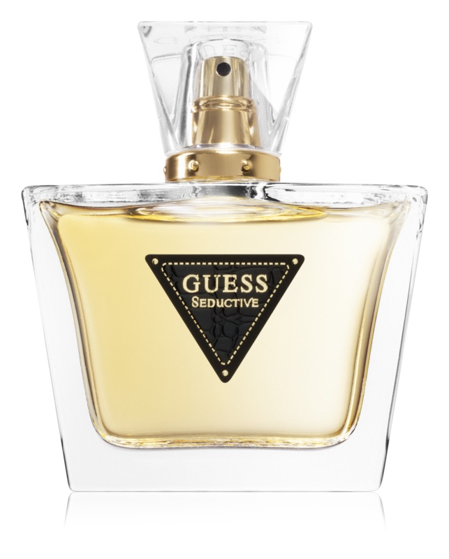
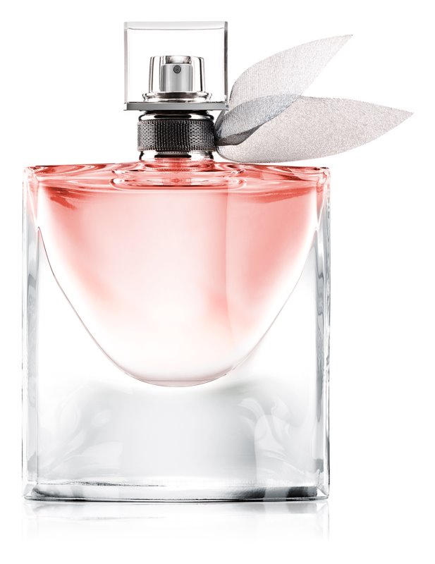
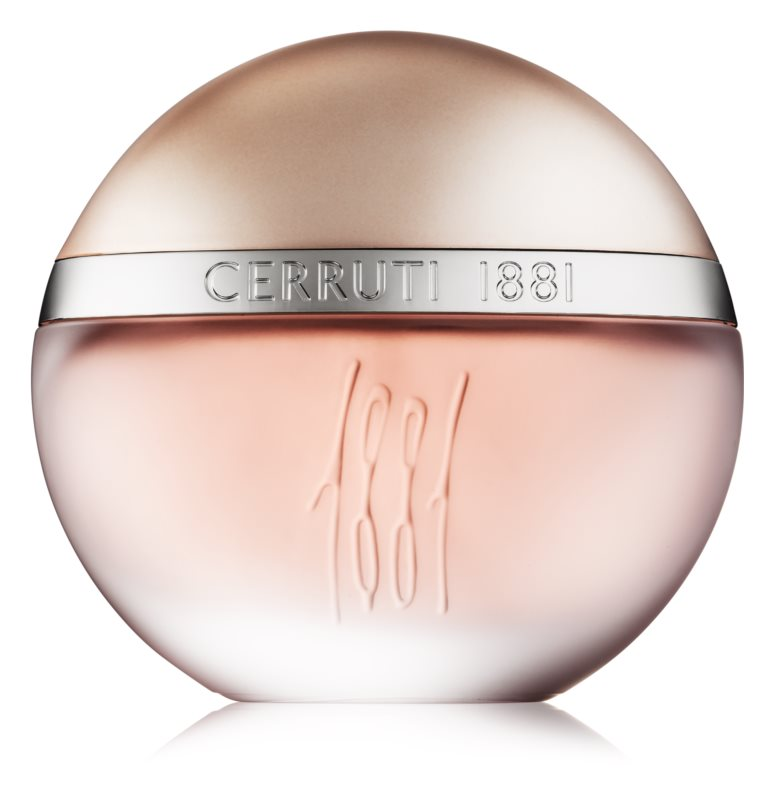
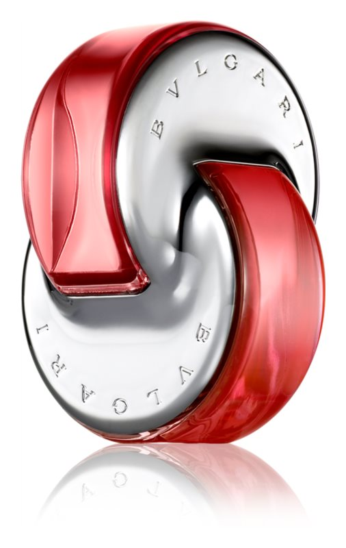
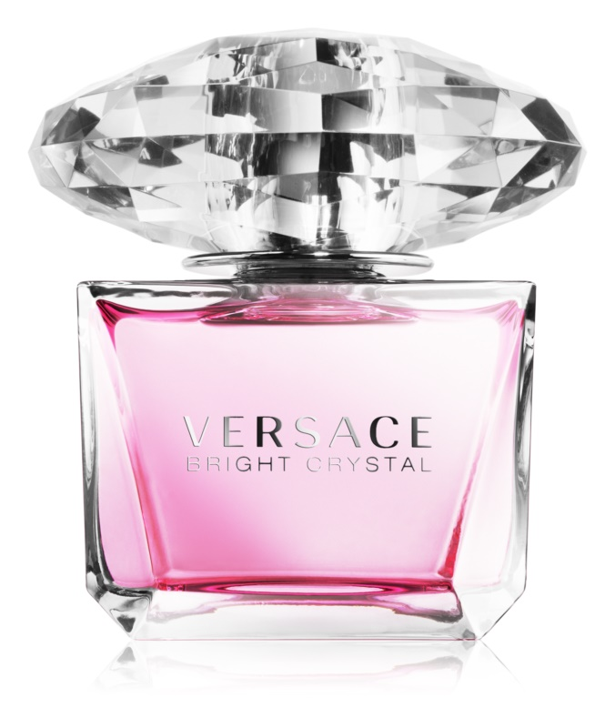
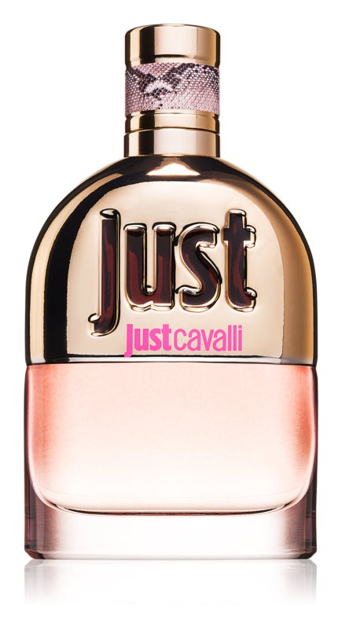

Guess Seductive
Прелъстяването е игра, в която не важат никакви правила. Дамската тоалетна вода Guess Seductive ще ви
придаде необходимото самочувствие, благодарение на което винаги ще имате предимство. Нейните
плодово-цветни нотки перфектно подчертават женствеността ви и помагат да се открои личният ви чар,
благодарение на който никой няма да устои.

La Vie Est Belle
La Vie Est Belle представлява изборът да изживявате своя живот по своему, свободата да избирате собствен
път към щастието, без обвързване с очакванията на обществото. Той укрива в себе си уравновесена
комбинация на красотата и силата. Ароматът е представен на пазара през 2012 година и по неговото
възникване съвместно работят трима френски парфюмерийни майстори начело с Dominique Ropion (Доминик
Ропион). Флаконът на парфюмната вода изобразява усмивка в остри кристални линии и е преработка на
оригиналната версия от 1949 година.

1881 Pour Femme
Във връхните нотки ви очарова нежната комбинация на жасмин, фрезия, ирис, мимоза, момина сълза, роза и
цветни листенца на теменуга. Сърцето на тоалетната вода е препълнено с още цветя и долавяте ароматните
акорди на съблазнителен жасмин, тубероза, нарцис и цвят на портокал. Базата е създадена отчувствената
комбинация от дървесини, мускус и кехлибар с капка завладяваща ванилия.

Bvlgari Omnia Coral
Флорален, плодов аромат, който създава усещането за слънчев летен ден, за богата флоралност на спираща
дъха природа и безграничен океан през цялата година. Дамската тоалетна вода Bvlgari Omnia Coral е
вдъхновена от искрящите цветове на редки червени корали и в състава си съчетава хармонична комбинация от
цветове хибискус, водна лилия, сочно годжи бери и сладък нар.

Versace Bright Crystal
Най-обичаното бижу в света на парфюмите – запознайте се с тоалетната вода Versace Bright Crystal.
Нейните нежни цветни нотки ще ви обвият във фин, чист аромат, който е същевременно много женствен и
чувствен.
Уникалното капаче на флакона, представляващо елегантен шлифован скъпоценен камък, препраща към
бижутерийното дело на модната къща Versace.

Roberto Cavalli Just Cavalli
Наслаждавайте се с пълна сила на играта на прелъстяване, която се развива в джунглата на големия град,
където смело сте излезли на лов. Дамската тоалетна вода Roberto Cavalli Just Cavalli олицетворява
провокативната съблазнителност и сексапил, благодарение на които никой не може да ви устои.